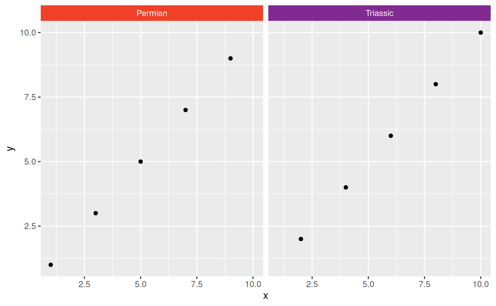

facet_grid_color behaves similarly to ggplot2::facet_grid() in that it
forms a matrix of panels defined by row and column faceting variables. The
main difference is that it also allows the user to specify the background
colors of the individual facet strips using the colors argument. If you
have only one variable with many levels, try facet_wrap_color().
Usage
facet_grid_color(
rows = NULL,
cols = NULL,
scales = "fixed",
space = "fixed",
shrink = TRUE,
labeller = "label_value",
colors = stages,
as.table = TRUE,
switch = NULL,
drop = TRUE,
margins = FALSE,
axes = "margins",
axis.labels = "all"
)Arguments
- rows, cols
A set of variables or expressions quoted by
vars()and defining faceting groups on the rows or columns dimension. The variables can be named (the names are passed tolabeller).For compatibility with the classic interface,
rowscan also be a formula with the rows (of the tabular display) on the LHS and the columns (of the tabular display) on the RHS; the dot in the formula is used to indicate there should be no faceting on this dimension (either row or column).- scales
Are scales shared across all facets (the default,
"fixed"), or do they vary across rows ("free_x"), columns ("free_y"), or both rows and columns ("free")?- space
If
"fixed", the default, all panels have the same size. If"free_y"their height will be proportional to the length of the y scale; if"free_x"their width will be proportional to the length of the x scale; or if"free"both height and width will vary. This setting has no effect unless the appropriate scales also vary.- shrink
If
TRUE, will shrink scales to fit output of statistics, not raw data. IfFALSE, will be range of raw data before statistical summary.- labeller
A function that takes one data frame of labels and returns a list or data frame of character vectors. Each input column corresponds to one factor. Thus there will be more than one with
vars(cyl, am). Each output column gets displayed as one separate line in the strip label. This function should inherit from the "labeller" S3 class for compatibility withlabeller(). You can use different labeling functions for different kind of labels, for example uselabel_parsed()for formatting facet labels.label_value()is used by default, check it for more details and pointers to other options.- colors
Specifies which colors to use to replace the strip backgrounds. Either A) a function that returns a color for a given strip label, B) the character name of a function that does the same, C) a named character vector with names matching strip labels and values indicating the desired colors, or D) a data.frame representing a lookup table with columns named "name" (matching strip labels) and "color" (indicating desired colors). If the function returns
- as.table
If
TRUE, the default, the facets are laid out like a table with highest values at the bottom-right. IfFALSE, the facets are laid out like a plot with the highest value at the top-right.- switch
By default, the labels are displayed on the top and right of the plot. If
"x", the top labels will be displayed to the bottom. If"y", the right-hand side labels will be displayed to the left. Can also be set to"both".- drop
If
TRUE, the default, all factor levels not used in the data will automatically be dropped. IfFALSE, all factor levels will be shown, regardless of whether or not they appear in the data.- margins
Either a logical value or a character vector. Margins are additional facets which contain all the data for each of the possible values of the faceting variables. If
FALSE, no additional facets are included (the default). IfTRUE, margins are included for all faceting variables. If specified as a character vector, it is the names of variables for which margins are to be created.- axes
Determines which axes will be drawn. When
"margins"(default), axes will be drawn at the exterior margins."all_x"and"all_y"will draw the respective axes at the interior panels too, whereas"all"will draw all axes at all panels. Only works for ggplot2 version 3.5.0 and later.- axis.labels
Determines whether to draw labels for interior axes when the
axesargument is not"margins". When"all"(default), all interior axes get labels. When"margins", only the exterior axes get labels and the interior axes get none. When"all_x"or"all_y", only draws the labels at the interior axes in the x- or y-direction respectively. Only works for ggplot2 version 3.5.0 and later.
Examples
library(ggplot2)
df <- data.frame(x = 1:10, y = 1:10, period = c("Permian", "Triassic"))
ggplot(df) +
geom_point(aes(x, y)) +
facet_grid_color(cols = vars(period), colors = periods)
